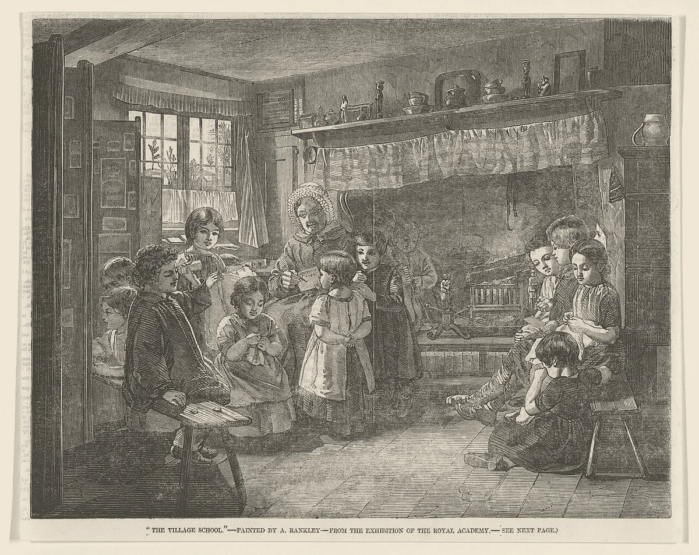

· Edición 60 · 6 min de lectura
Imaginemos: que todo niño de colegio público lea al terminar segundo

Imaginemos: que todo niño de colegio público lea al terminar segundo
Ver todo el tema, de principio a fin →
En pocas palabras. La distancia entre colegios privados y públicos se ve en el examen de once, pero se abre en primero y segundo, cuando un niño aprende a leer o no. Ceará, uno de los estados más pobres de Brasil, la achicó midiendo cada año la lectura de segundo y atando dinero a lo que aprenden los niños. Hoy Otra lectura imagina cómo sería aquí: un ejercicio para pensar, no una receta.
Lo que ya habíamos contado. El 29 de octubre contamos que, en el Saber 11, la distancia entre colegios privados y públicos pasó de 30 a 36 puntos en doce años (ver esa edición). Hoy proponemos cerrarla desde abajo.
El problema en una línea. En el Saber 11, los colegios privados sacan 36 puntos más que los públicos, donde estudian 80 de cada 100 niños. Esa distancia no nace en once: el Icfes ya la encuentra en las pruebas de tercero, quinto y noveno.
¿Por qué pensarlo a 50 años? Los niños que hoy entran a primero trabajarán hasta pasado 2070. Según un estudio de 2012 de Eric Hanushek y Ludger Woessmann, el crecimiento lento de América Latina se explica más por lo poco que se aprende que por los años de escuela. Y en Estados Unidos, quien no lee bien en tercero tiene unas cuatro veces más riesgo de no terminar el bachillerato.
Qué ya se probó. En el año 2000, el alcalde de Sobral, una ciudad del estado de Ceará, recibió una cifra que pocos alcaldes quieren mostrar: solo 48 de cada 100 niños de segundo leían como debían. En vez de esconderla, la repitió en discursos, en la radio y en televisión. En 2004 eran 92.
Ceará copió la idea en 2007: mide cada año a todos los niños y reparte entre sus municipios 18 de cada 100 reales de una bolsa de impuestos según lo que aprenden. Un estudio del Banco Mundial de 2021, que comparó escuelas a lado y lado de la frontera del estado, encontró mejores puntajes, el doble donde el estado además asesoró a los municipios.
La lección: al principio ganaban más los mejores alumnos; la brecha solo bajó cuando la fórmula empezó a castigar a los municipios con más niños rezagados.
Brasil lo volvió regla nacional. Una reforma constitucional de 2020 obliga a repartir al menos 10 de cada 100 reales de esa bolsa según la mejora en aprendizaje y equidad.
En Kenia, un ensayo con grupos al azar en 847 escuelas (2018) mostró que funcionaba el paquete completo: guía de clase para el maestro, un libro por niño y visitas de acompañamiento. Hoy es el programa nacional.
Colombia también probó. Entre 2015 y 2018 premió con dinero a los docentes de colegios que cumplían su meta en un índice de calidad; un estudio de 2019 no encontró que mejoraran más que los demás. Y Todos a Aprender, el programa de tutores para maestros, tiene evaluaciones mixtas: depende de qué tan bien se aplique.
La propuesta. La de Otra lectura es un pacto de diez años con cuatro reglas:
- Medir a todos, cada año. El Icfes aplica a todos los niños de segundo de colegios públicos una prueba corta de lectura y cuentas, y publica el resultado de cada sede. Es un termómetro, no una lista negra de maestros.
- Darle al maestro la clase armada. Cada maestro de primero y segundo recibe una guía clase por clase, un libro por niño y un acompañante que lo visita, empezando por las sedes más rezagadas.
- Que el dinero siga a los rezagados. El componente de calidad del dinero que la Nación gira a las regiones para educación (unos 825.000 millones de pesos en 2026) pasaría a repartirse según cuánto suben, en segundo, los niños que iban más atrás. Quien no mejora no pierde nómina ni comida escolar: recibe asesoría obligatoria.
- Que dure más que un gobierno. La meta va en una ley: 80 de cada 100 niños de colegios públicos leyendo como se espera al terminar segundo en 2036. La prueba la hace el Icfes, con datos abiertos.
Hoy ese componente mira, entre otras cosas, el Saber 11, el examen del último grado: como evaluar una cosecha por lo que quedó en la bodega.
Cuánto costaría y de dónde sale. Hay unos 1,2 millones de niños en primero y segundo de colegios públicos (estimación nuestra con datos del DANE).
En Kenia, el paquete costó unos 8 dólares por niño. Si aquí costara de cinco a diez veces más, por salarios y distancias, serían entre 150.000 y 350.000 millones de pesos al año, con la prueba (estimación nuestra, orden de magnitud).
Es menos de 1 de cada 100 pesos de los 49,6 billones que la Nación gira este año a las regiones para educación. La bolsa del premio no es dinero nuevo: es la que ya existe, con otra regla. El resto saldría del aumento de esas transferencias aprobado en 2024, que llegarán a 39,5% de los ingresos corrientes de la Nación en doce años, cuando exista la ley de competencias.
Qué podría salir mal.
- La trampa del examen. Si hay dinero en juego, hay presión para inflar resultados o enseñar solo para la prueba. Por eso la aplicaría el Icfes, no el colegio.
- El mejor argumento en contra. Fecode, el sindicato de maestros, ha dicho que premiar resultados beneficia a quienes ya van mejor, discrimina a los más pobres y convierte la escuela en entrenamiento para pruebas. El experimento colombiano de 2015 le da argumentos.
- La autonomía. Gobernadores y alcaldes quieren el dinero nuevo sin amarres, y en el Congreso ya preguntan si alcanza para pagarlo.
- El reloj político. Los niños de siete años no votan. Su mejora se vería en el Saber 11 diez años después, cuando el gobernante que hizo el esfuerzo ya no esté para cobrarla.
Quién decide y cuándo
Quién decide. La meta y la regla del dinero, el Congreso, por ley; la vía natural es la ley de competencias. La prueba y los materiales, el Ministerio de Educación, el Icfes y las secretarías de educación.
Cuándo. El Gobierno entrega el 15 de noviembre las bases de su Plan Nacional de Desarrollo. De la ley de competencias no hay fecha: en agosto anunció que retiraría la anterior y presentaría otra, más una ley para que los territorios ensayen formas nuevas de hacer las cosas. Esta propuesta se ofrece, sin costo, como primer ensayo.
Cómo participar. (Conocimiento general: el Consejo Nacional de Planeación recibe propuestas mientras estudia las bases del plan.)
Seguimiento de la decisión
Pendiente · sin fecha fija
Gobierno nacional (Ministerio del Interior), que debe presentar el proyecto, y Congreso, que lo aprueba como ley orgánica: Presentar y aprobar la ley de competencias, que define qué hace cada nivel del Estado con el aumento de las transferencias a las regiones (Sistema General de Participaciones) aprobado en 2024. Por esa vía podría entrar una regla que reparta parte del dinero de la educación según cuánto mejoran los niños más rezagados.
La reforma constitucional del Sistema General de Participaciones (Acto Legislativo 03 de 2024) condiciona el aumento a esta ley. El gobierno anterior radicó un proyecto; en agosto de 2026 el nuevo Gobierno anunció que lo retiraría y que presentaría uno nuevo, junto con una ley de experimentación territorial. Al 7 de noviembre no encontramos fecha de radicación.
La paradoja del día
Lo más absurdo de la edición, en dos líneas
Uno de los estados más pobres de Brasil es el que mejor enseña a leer: en 2025, 84 de cada 100 niños de segundo en Ceará leían como se espera; en todo Brasil, 66.
Para conversar
La pregunta. ¿Usted apoyaría que una parte del dinero de los colegios dependa de cuánto mejoran los niños que van más atrás? ¿Qué le cambiaría a la propuesta?
Para leer más
Libros para seguir con el tema
El cerebro lector, de Stanislas Dehaene (Siglo XXI, 2014; original en francés de 2009). Un neurocientífico explica qué pasa en el cerebro de un niño cuando aprende a leer y por qué la manera de enseñar importa. Ayuda a entender por qué los primeros grados pesan tanto.
The Knowledge Capital of Nations, de Eric A. Hanushek y Ludger Woessmann (MIT Press, 2015; en inglés). Los dos economistas citados en esta edición sostienen, con datos de decenas de países, que lo que los niños aprenden pesa más en el desarrollo que los años que pasan en la escuela.
¿Le interesa ver las fuentes?
Todos los documentos y datos que usamos
35 fuentes: 7 académicas, 7 oficiales, 3 de datos, 6 de organizaciones, 10 de prensa, 2 de referencia.
- Oficial Icfes (nota de política, agosto de 2026). Doce años del examen Saber 11.º: contexto y resultados 2014-2025
- Prensa IFM Noticias. Doce años de Saber 11: el puntaje nacional se recupera, pero la brecha entre colegios oficiales y privados es la más grande del periodo
- Oficial Icfes (Apuntes del Icfes para la política educativa, n.º 1, 2022). Brechas en aprendizaje
- Datos DANE. Educación Formal (EDUC) 2024, boletín técnico (30 de abril de 2026)
- Datos DANE. Educación Formal (EDUC) 2023, boletín técnico (28 de junio de 2024)
- Académica Journal of Development Economics (Hanushek y Woessmann, 2012). Escolaridad, logro educativo y el enigma del crecimiento de América Latina
- Académica Annie E. Casey Foundation (Donald J. Hernandez, 2011), reseñado por Reading Rockets. Double Jeopardy: How Third-Grade Reading Skills and Poverty Influence High School Graduation
- Académica Center on Reinventing Public Education (enero de 2024). Literacy for All: The Story of Sobral
- Académica Banco Mundial (Lautharte, de Oliveira y Loureiro, documento de trabajo 9509, 2021). Incentives for Mayors to Improve Learning: Evidence from State Reforms in Ceará, Brazil
- Organización Banco Mundial (2020). The State of Ceará in Brazil is a Role Model for Reducing Learning Poverty
- Oficial Ministério da Educação de Brasil. Indicador Criança Alfabetizada 2024: Ceará
- Prensa PublishNews (14 de julio de 2025). Índice de crianças alfabetizadas fica abaixo da meta no Brasil em 2024
- Organización Todos Pela Educação (marzo de 2026). Nota técnica: Indicador Criança Alfabetizada 2025
- Prensa Diário do Nordeste. Com 84% das crianças alfabetizadas, Ceará segue com o melhor índice do Brasil
- Oficial Senado Federal de Brasil. Constituição da República Federativa do Brasil: Emenda Constitucional 108, de 2020
- Académica World Development (Piper, Zuilkowski, Dubeck, Jepkemei y King, 2018). Identificar los ingredientes esenciales para mejorar la lectura y las matemáticas: formación y acompañamiento docente, libros para los alumnos y guías estructuradas para el maestro
- Organización Center for Global Development. Bringing a Literacy Project to Scale: Has Kenya Found the Holy Grail?
- Organización Innovations for Poverty Action. The Impact of Tusome: Evidence from a National-Scale Tested Literacy Program in Kenya
- Académica Revista de Educación (Bolena, Duarte, Estrada, Godoy y Dueñas, n.º 385, 2019). Calidad docente en Colombia: ¿una cuestión de incentivos económicos?
- Prensa Semana. ¿Qué pasará con los incentivos que se entregaban con el resultado de la prueba Saber?
- Académica Revista Desarrollo y Sociedad, Universidad de los Andes (Gómez-Echeverry, 2025). El efecto del Programa Todos a Aprender: una evaluación de impacto con tratamiento jerárquico multivaluado
- Oficial Departamento Nacional de Planeación. Documento de distribución SGP-110-2026: participación para educación, vigencia 2026
- Oficial Departamento Nacional de Planeación. Anexo metodológico 2: calidad matrícula oficial
- Organización Banco Mundial (Global Education Evidence Advisory Panel, 2023). Cost-Effective Approaches to Improve Global Learning: What Does Recent Evidence Tell Us Are Smart Buys?
- Datos Dólar Colombia (TRM certificada por la Superintendencia Financiera). TRM vigente el jueves 5 de noviembre de 2026
- Prensa La República. Las regiones pasarán de tener 27% a 39,5% de los ingresos corrientes de la Nación
- Prensa Valora Analitik. Gobierno Petro radica proyecto de ley clave para los billonarios giros que entrega a las regiones cada año
- Prensa El Tiempo. Gobierno De La Espriella retirará el proyecto de la Ley de Competencias de Petro: qué cambiará y por qué expertos respaldan la decisión
- Prensa El Tiempo. Gobierno De La Espriella anuncia nueva ruta para descentralizar el Estado: presentará Ley de Competencias y un proyecto de experimentación territorial
- Prensa Portafolio. Congreso revisa sostenibilidad del nuevo SGP y presiona al Gobierno por la Ley de Competencias
- Organización Federación Colombiana de Trabajadores de la Educación (Fecode, 2017). Propuesta frente al Día E
- Oficial Departamento Nacional de Planeación. DNP lidera articulación de alto nivel para la construcción del Plan Nacional de Desarrollo de la Patria Milagro 2026-2030
- Prensa IFM Noticias. Plan Nacional de Desarrollo 2026-2030 arranca con 334 proyectos por 535,1 billones y un cronograma que termina en el Congreso
- Referencia MIT Press. The Knowledge Capital of Nations: Education and the Economics of Growth, de Eric A. Hanushek y Ludger Woessmann
- Referencia Dialnet (reseña académica). Reseña de El cerebro lector, de Stanislas Dehaene (Siglo XXI, 2014)
Glosario
Las palabras técnicas, explicadas
- Saber 11: examen de Estado que presentan los estudiantes de grado once; el puntaje global va de 0 a 500.
- Icfes: la entidad pública que diseña y aplica los exámenes de Estado en Colombia.
- Sistema General de Participaciones (SGP): el dinero que la Nación gira cada año a departamentos y municipios para educación, salud, agua y otros gastos.
- Ley de competencias: la ley que debe definir qué le toca a cada nivel del Estado con el aumento del SGP aprobado en 2024.
- Pedagogía estructurada: enseñar con guías de clase detalladas, materiales para cada niño y acompañamiento al maestro.
- Ceará: estado del nordeste de Brasil, de unos nueve millones de habitantes.
- Real: la moneda de Brasil.
Nota metodológica
Cómo se hizo esta edición y qué no pudimos verificar
Esta propuesta es un ejercicio de Otra lectura para pensar, no una verdad ni el programa de ningún partido o gobierno.
Por qué este nudo. La rutina pide tomar un nudo ya tratado: el de mayor puntaje o el que más se movió en el mes. Desde el 5 de noviembre, además, el horizonte manda: el tema debe cambiar cómo vive la gente dentro de 10 a 50 años. Comparamos cuatro:
| Nudo | Puntaje en su edición | ¿Cambia la vida en 10 a 50 años? |
|---|---|---|
| Brecha entre colegios públicos y privados (29 de octubre) | 22 de 24 | Sí: define qué sabrán hacer quienes trabajarán hasta pasado 2070 |
| Feminicidio y protección (27 de octubre) | 22 de 24 | Sí, pero el daño es grave y concentrado; el diseño es de justicia y policía |
| Sarampión (4 de noviembre) | 23 de 24 | El editor lo puso como ejemplo de lo que no cambia el rumbo a 50 años |
| Niños reclutados (21 de octubre) | 18, con el puntaje anterior | Sí; se movió esta semana con la ley de sometimiento, pero la ley ya está decidida |
Pensiones (16 de octubre, 19 con el puntaje anterior) también pesa a 50 años; la dejamos para otro mes porque su reforma sigue en revisión de la Corte. Elegimos la brecha escolar porque tiene el mayor puntaje entre los que pasan el horizonte y porque la evidencia sobre qué funciona es más sólida.
Hicimos unas 45 búsquedas en español, portugués e inglés. No pudimos abrir los documentos completos; trabajamos con resúmenes y fragmentos, y no les atribuimos más de lo que dicen.
Quedó sin verificar o con límites:
- Las cifras del Saber 11 (30 y 36 puntos) son del Icfes, reseñadas por IFM Noticias; otras fuentes, con otros métodos, dan brechas distintas pero en la misma dirección.
- Que la brecha ya aparece en tercero sale del resumen del informe del Icfes de 2022; no encontramos la cifra exacta por grado.
- Los 1,2 millones de niños son una cuenta nuestra: el DANE reportó en 2023 unos 3,52 millones en primaria, con 21,5 de cada 100 en primero y 20,4 en segundo, y 80,5 de cada 100 estudiantes en colegios oficiales en 2024. Suponemos la misma proporción oficial en esos grados.
- El costo de Kenia (5,63 dólares por niño en formación y visitas, y 2,38 en libros) es del ensayo de 2018. El multiplicador de cinco a diez veces es un supuesto nuestro; usamos una tasa de unos 3.220 pesos por dólar (TRM del 5 de noviembre).
- Los 825.000 millones (824.662 millones exactos) y los 49,6 billones salen de los documentos de distribución del DNP; que el componente de calidad pondere el Saber 11 y la mejora sale de su anexo metodológico.
- Para Brasil, el 56 de 2023 y el 59,2 de 2024 son del Ministerio de Educación según PublishNews; el 66 de 2025, de Todos Pela Educação. Para Ceará en 2024, el Ministerio da 85; en 2025, el Diário do Nordeste da 84. Las fuentes no coinciden del todo en la base de 2023.
- El estudio de Ceará encontró un efecto moderado (0,15 desviaciones estándar en noveno). El de Estados Unidos sobre lectura en tercero es de observación, no prueba que una cosa cause la otra, y tiene críticos.
- Del estudio de 2019 sobre los incentivos leímos el resumen; sus autores advierten que el resultado depende de algunos supuestos.
- La posición de Fecode es de su documento de 2017 sobre el Día E; no encontramos uno más reciente sobre el tema.
- El panel de expertos del Banco Mundial de 2023 recomienda la pedagogía estructurada; las fuentes no coinciden en si la clasifica entre las mejores o las buenas compras.
Seguimiento de decisiones. El presidente sancionó el 4 de noviembre la ley de sometimiento (Ley 2640 de 2026); lo anotamos en la edición del 21 de octubre. Revisamos la entrega de las bases del Plan Nacional de Desarrollo (15 de noviembre): no encontramos cambios en la fecha.
El grabado, del Illustrated London News de 1856, muestra una escuela de aldea en Inglaterra; es de otra época y lo usamos para evocar el tema. No encontramos una escena de escuela colombiana de época con licencia libre.
Los libros de «Para leer más» los elegimos por el tema; ninguno está en el catálogo de Santo & Seña. Los datos de editorial y año salen de la página de MIT Press y de una reseña académica.